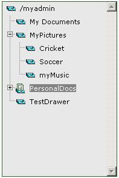
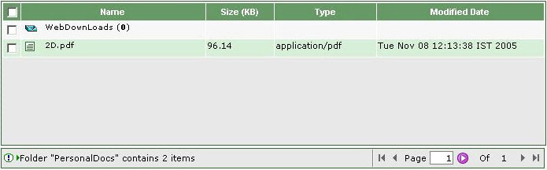

- '/ ' indicates root folder.
- '-' indicates expanded state of the folder. Clicking on it will hide the sub folders.
- '+' indicates collapsed state of the folder. Clicking on it will display the sub folders.
- Clicking on the folder will display the contents of the folder in the Folder/Document List on the right-hand side.
- Open Folder indicates that the contents of the folder are displayed in the Folder/Document List and vice-versa.

- Folder [
 ]
]
- Document [
 ]
]
1) To see the content of the folder click on the text of the corresponding icon.
2) To view the document click on the text of the corresponding icon.
3) To view the folder above the displayed folder click up icon.
4) You can navigate through the Folder/Document List using the Previous, Next, Up icons, it view the corresponding pages.